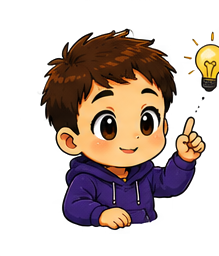
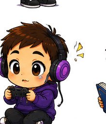
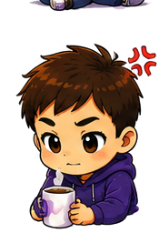
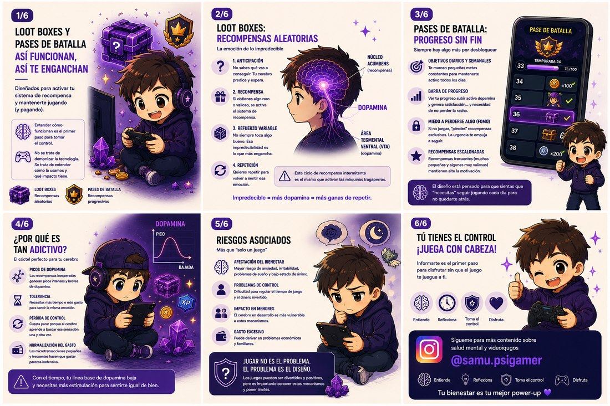
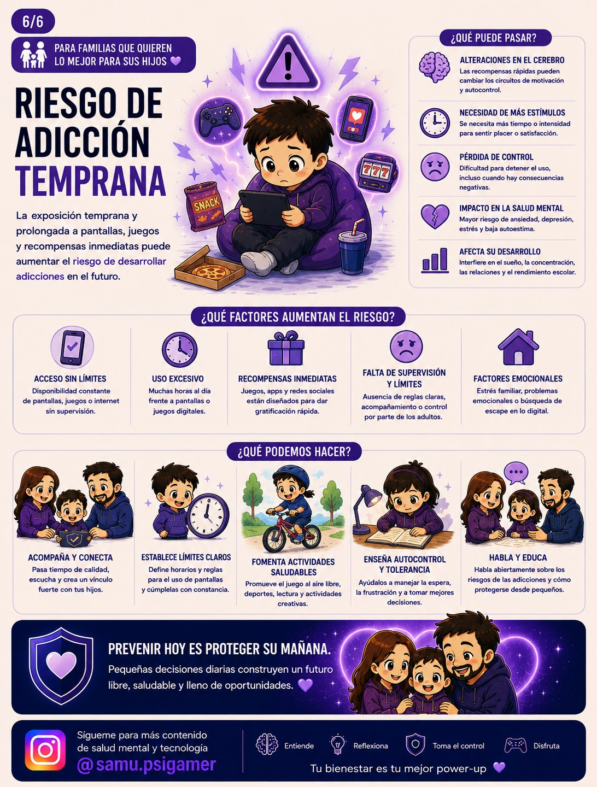
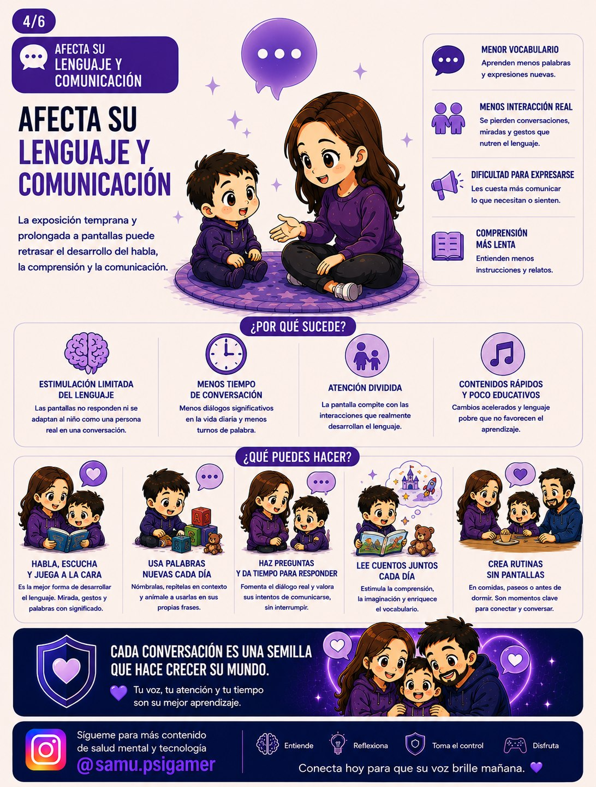
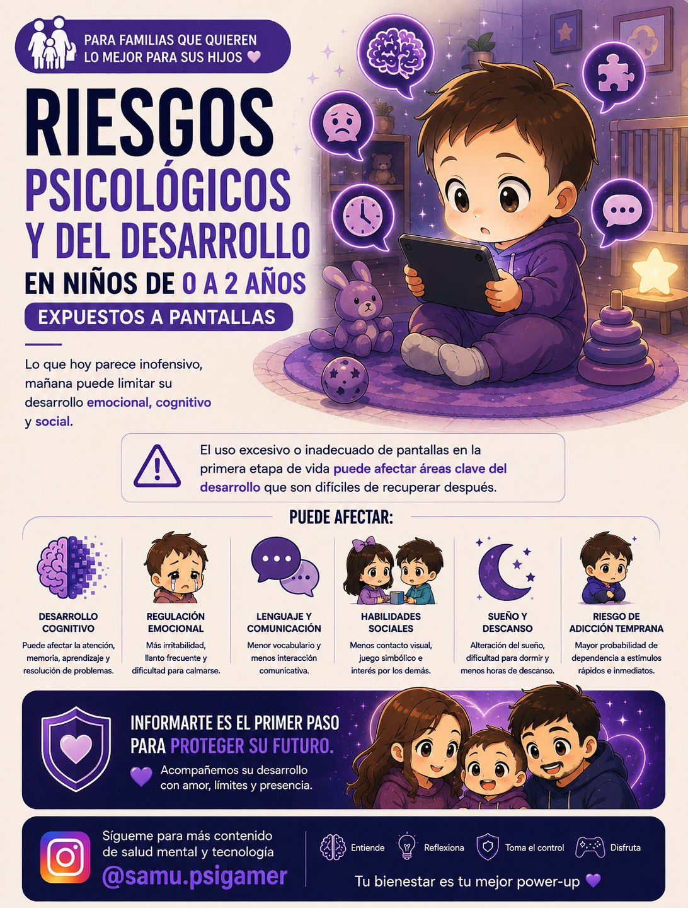
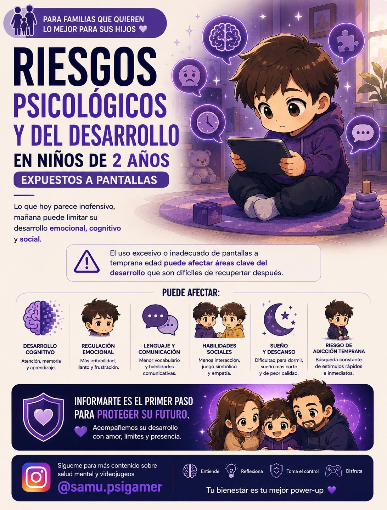
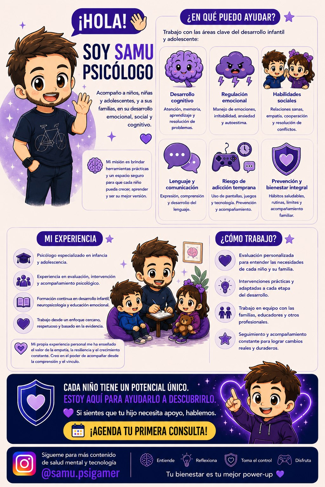

Divulgación psicológica
Contenido claro y práctico sobre salud mental, tecnología y gaming.
01 · Sobre mí
La tecnología forma parte de la vida cotidiana. Por eso también puede formar parte de una conversación psicológica útil y sin prejuicios.
Mi objetivo es crear un espacio en el que niños, adolescentes y familias puedan entender qué está pasando, adquirir herramientas y avanzar paso a paso.
Me interesa especialmente la intersección entre salud mental, videojuegos y tecnología: hábitos digitales, regulación emocional, diseño de recompensas, uso de pantallas y prevención.
“ No se trata de demonizar la tecnología. Se trata de aprender a relacionarnos con ella.Consultas online

¿Qué hago?
Combino la psicología con el mundo digital para ofrecer recursos, acompañamiento y divulgación.

02 · Qué hago
Combino la psicología con el mundo digital para ofrecer recursos, acompañamiento y divulgación a quien lo necesite.
Contenido claro y práctico sobre salud mental, tecnología y gaming.
Orientación para entender, prevenir y actuar juntos.
Guías, lecturas, materiales y mucho más para llevarte a casa.
Equilibrio, límites y uso consciente de la tecnología.
03 · Servicios
Trabajo de forma personalizada sobre estas seis áreas, adaptando cada intervención a la etapa y a las necesidades de cada niño, niña o adolescente.


Atención, memoria, aprendizaje y resolución de problemas.
Manejo de emociones, irritabilidad, ansiedad y autoestima.
Relaciones sanas, empatía, cooperación y resolución de conflictos.
Expresión, comprensión y desarrollo del lenguaje.

Uso de pantallas, juegos y tecnología. Prevención y acompañamiento.

Hábitos saludables, rutinas, límites y acompañamiento familiar.
04 · Mi experiencia
Mi propia experiencia personal me ha enseñado el valor de la empatía, la resiliencia y el crecimiento constante. Creo en el poder de acompañar desde la comprensión y el vínculo.

05 · Me interesa especialmente
06 · Recursos
Pósters e infografías descargables sobre salud mental, pantallas y videojuegos, pensados para leer y compartir en familia.

Así funcionan, así te enganchan: el mecanismo psicológico detrás de las recompensas aleatorias.
Ver recurso →
Qué factores lo aumentan, qué puede pasar y qué podemos hacer las familias.
Ver recurso →
Cómo la exposición temprana a pantallas puede retrasar el habla y qué hacer al respecto.
Ver recurso →
Riesgos psicológicos y del desarrollo por la exposición temprana a pantallas.
Ver recurso →
Qué áreas del desarrollo pueden verse afectadas y cómo acompañarlas.
Ver recurso →
Un resumen visual de en qué puedo ayudarte y cómo trabajo con cada familia.
Ver recurso →
07 · Contacto
Si tienes dudas, necesitas orientación o solo quieres saludar, estaré encantado de leerte.